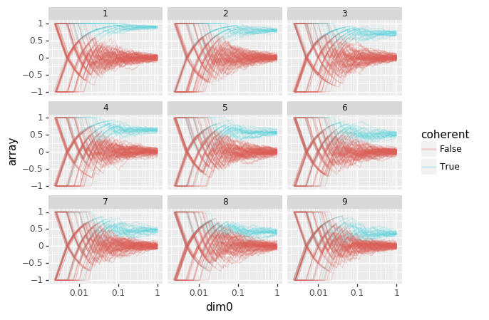

Framing models¶
[3]:
import lettertask
import patches
import torch
import torch.nn as nn
import torch.optim as optim
import numpy as np
from tqdm import tqdm
import lazytools_sflippl as lazytools
import plotnine as gg
import pandas as pd
[4]:
cbm = lettertask.data.CompositionalBinaryModel(
width=[5, 5],
change_probability=[0.05, 0.5],
samples=10000,
seed=1001
)
[5]:
cts = patches.data.Contrastive1DTimeSeries(cbm.to_array(), seed=202)
Base-reconstructive model¶
[6]:
class BaRec(nn.Module):
def __init__(self, latent_features, input_features=None, timesteps=None,
data=None, bias=True):
super().__init__()
if data:
input_features = input_features or data.n_vars
timesteps = timesteps or data.n_timesteps
elif input_features is None or timesteps is None:
raise ValueError('You must either provide data or both input '
'features and timesteps.')
self.latent_features = latent_features
self.input_features = input_features
self.timesteps = timesteps
self.encoder = nn.Linear(input_features, latent_features, bias=bias)
self.predictor = nn.Linear(latent_features, timesteps, bias=bias)
self.decoder = nn.Conv1d(latent_features, input_features, 1, bias=bias)
def forward(self, x):
code = self.encoder(x['current_values'])
prediction = self.predictor(code)
decoded = self.decoder(prediction).transpose(1, 2)
return decoded
[7]:
barec = BaRec(1, data=cts)
optimizer = optim.Adam(barec.parameters())
criterion = nn.MSELoss()
[177]:
data = cts[0]
prediction = barec(data)
print(data['future_values'].shape)
print(prediction.shape)
torch.Size([1, 5, 10])
torch.Size([1, 5, 10])
[221]:
ideal = np.array([[1,0],[0,1]], dtype=np.float32).repeat(5,1)/np.sqrt(5)
ideal
[221]:
array([[0.4472136, 0.4472136, 0.4472136, 0.4472136, 0.4472136, 0. ,
0. , 0. , 0. , 0. ],
[0. , 0. , 0. , 0. , 0. , 0.4472136,
0.4472136, 0.4472136, 0.4472136, 0.4472136]], dtype=float32)
[233]:
barec = BaRec(1, data=cts, bias=False)
optimizer = optim.Adam(barec.parameters())
criterion = nn.MSELoss()
loss_traj = []
angles = []
running_loss = 0
for epoch in tqdm(range(10)):
for i, data in enumerate(cts):
if i<len(cts):
optimizer.zero_grad()
prediction = barec(data)
loss = criterion(prediction, data['future_values'])
loss.backward()
optimizer.step()
running_loss += loss
if i % 50 == 49:
loss_traj.append(running_loss.detach.numpy()/50)
running_loss = 0
est = next(barec.parameters()).detach().numpy()
angles.append(np.matmul(ideal, est.T)/np.sqrt(np.matmul(est, est.T)))
100%|██████████| 10/10 [03:09<00:00, 19.00s/it]
[234]:
(gg.ggplot(
lazytools.array_to_dataframe(
np.array(
[l.detach().numpy() for l in loss_traj]
)
),
gg.aes(x='dim0', y='array')
) +
gg.geom_smooth(method='loess'))
[234]:
<ggplot: (8791303868721)>
[235]:
(gg.ggplot(
lazytools.array_to_dataframe(
np.concatenate(angles, axis=1)
),
gg.aes(x='dim1', y='array', color='dim0', group='dim0')
) +
gg.geom_line())

[235]:
<ggplot: (8791280290477)>
[239]:
np.save('angles.npy', np.concatenate(angles, axis=1))
1-part latent predictive model¶
[240]:
class LaPred1P(nn.Module):
def __init__(self, latent_features, input_features=None, timesteps=None,
data=None, bias=True):
super().__init__()
if data:
input_features = input_features or data.n_vars
timesteps = timesteps or data.n_timesteps
elif input_features is None or timesteps is None:
raise ValueError('You must either provide data or both input '
'features and timesteps.')
self.latent_features = latent_features
self.input_features = input_features
self.timesteps = timesteps
self.encoder = nn.Linear(input_features, latent_features, bias=bias)
self.predictor = nn.Linear(latent_features, timesteps*latent_features, bias=bias)
def forward(self, x):
code = self.encoder(x['input'])
prediction = self.predictor(code).\
reshape(self.timesteps, self.latent_features)
return prediction
[241]:
hmm = patches.data.HiddenMarkovModel(cbm.to_array(), cbm.latent_array()[:, [0]])
[242]:
lapred1p = LaPred1P(1, data=hmm, bias=False)
[243]:
lapred1p(hmm[0])
[243]:
tensor([[-0.0386],
[-0.0826],
[-0.1529],
[ 0.1223],
[ 0.2436]], grad_fn=<AsStridedBackward>)
[244]:
hmm[0]['future_latent_values']
[244]:
tensor([[ 1.],
[ 1.],
[ 1.],
[-1.],
[-1.]])
[263]:
lapred1p = LaPred1P(1, data=hmm, bias=False)
optimizer = optim.Adam(lapred1p.parameters())
criterion = nn.MSELoss()
running_loss = 0
loss_traj = []
angles = []
for epoch in tqdm(range(10)):
for i, data in enumerate(hmm):
if i<len(hmm):
if i % 10 == 0:
est = list(lapred1p.parameters())[0].detach().numpy()
angles.append(np.matmul(ideal, est.T)/np.sqrt(np.matmul(est, est.T)))
optimizer.zero_grad()
prediction = lapred1p(data)
loss = criterion(prediction, data['future_latent_values'])
loss.backward()
optimizer.step()
running_loss += loss
if i % 50 == 49:
loss_traj.append(running_loss.detach().numpy()/50)
running_loss = 0
100%|██████████| 10/10 [01:06<00:00, 6.54s/it]
[253]:
list(lapred1p.parameters())
[253]:
[Parameter containing:
tensor([[ 0.7730, 0.7273, 0.7634, 0.7965, 0.7437, -0.0198, 0.0096, 0.0015,
-0.0025, -0.0059]], requires_grad=True), Parameter containing:
tensor([[1.2471],
[1.1386],
[1.0287],
[0.9341],
[0.8477]], requires_grad=True)]
[254]:
(gg.ggplot(
lazytools.array_to_dataframe(
np.array(loss_traj)
),
gg.aes(x='dim0', y='array')
) +
gg.geom_smooth(method='loess'))
[254]:
<ggplot: (8791279950705)>
[262]:
np.concatenate(angles, axis=1).shape
[262]:
(2, 10000)
[264]:
(gg.ggplot(
lazytools.array_to_dataframe(
np.concatenate(angles, axis=1)
),
gg.aes(x='dim1', y='array', color='dim0', group='dim0')
) +
gg.geom_line())
[264]:
<ggplot: (8791279803301)>
2-part latent predictive model¶
[23]:
class LaPred2P(nn.Module):
def __init__(self, latent_features, input_features=None, timesteps=None,
data=None, bias=True):
super().__init__()
if data:
input_features = input_features or data.n_vars
timesteps = timesteps or data.n_timesteps
elif input_features is None or timesteps is None:
raise ValueError('You must either provide data or both input '
'features and timesteps.')
self.latent_features = latent_features
self.input_features = input_features
self.timesteps = timesteps
self.encoder = nn.Linear(input_features, latent_features, bias=bias)
self.predictor = nn.Linear(latent_features, timesteps*latent_features, bias=bias)
def forward(self, x):
code = self.encoder(x['input'])
prediction = self.predictor(x['latent_values']).\
reshape(self.timesteps, self.latent_features)
return {
'latent_values': code,
'latent_prediction': prediction
}
[268]:
lapred2p = LaPred2P(1, data=hmm, bias=False)
optimizer = optim.Adam(lapred2p.parameters())
criterion = nn.MSELoss()
loss_traj = []
angles = []
running_loss = 0
for epoch in tqdm(range(10)):
for i, data in enumerate(hmm):
if i<len(hmm):
if i % 10 == 0:
est = list(lapred2p.parameters())[0].detach().numpy()
angles.append(np.matmul(ideal, est.T)/np.sqrt(np.matmul(est, est.T)))
optimizer.zero_grad()
prediction = lapred2p(data)
loss = criterion(prediction['latent_prediction'], data['future_latent_values']) + \
criterion(prediction['latent_values'], data['latent_values'])
loss.backward()
optimizer.step()
running_loss += loss
if i % 50 == 49:
loss_traj.append(running_loss.detach().numpy()/50)
running_loss = 0
100%|██████████| 10/10 [01:10<00:00, 7.08s/it]
[269]:
list(lapred2p.parameters())[0]
[269]:
Parameter containing:
tensor([[ 9.9996e-01, 9.9998e-01, 9.9991e-01, 1.0001e+00, 9.9993e-01,
-1.8158e-04, 4.4570e-05, 1.2544e-05, 1.2355e-04, 1.0690e-04]],
requires_grad=True)
[271]:
(gg.ggplot(
lazytools.array_to_dataframe(
np.array(loss_traj)
),
gg.aes(x='dim0', y='array')
) +
gg.geom_smooth(method='loess'))
[271]:
<ggplot: (8791269975685)>
[272]:
(gg.ggplot(
lazytools.array_to_dataframe(
np.concatenate(angles, axis=1)
),
gg.aes(x='dim1', y='array', color='dim0', group='dim0')
) +
gg.geom_line())
[272]:
<ggplot: (8791269975325)>
Contrastive predictive model¶
[274]:
cts = patches.data.Contrastive1DTimeSeries(data=cbm.to_array())
ce = patches.networks.LinearScaffold(latent_features=1, data=cts)
criterion = patches.losses.ContrastiveLoss(loss=nn.MSELoss())
optimizer = optim.Adam(ce.parameters())
angles = []
loss_traj = []
running_loss = 0
for epoch in tqdm(range(10)):
for i, data in enumerate(cts):
if i<len(cts):
if i % 10 == 0:
est = list(ce.parameters())[0].detach().numpy()
angles.append(np.matmul(ideal, est.T)/np.sqrt(np.matmul(est, est.T)))
optimizer.zero_grad()
code = ce(data)
loss = criterion(code)
loss.backward()
optimizer.step()
running_loss += loss
if i % 50 == 49:
loss_traj.append(running_loss.detach().numpy()/50)
running_loss = 0
100%|██████████| 10/10 [03:19<00:00, 19.86s/it]
[275]:
(gg.ggplot(
lazytools.array_to_dataframe(
np.array(loss_traj)
),
gg.aes(x='dim0', y='array')
) +
gg.geom_smooth(method='loess'))

[275]:
<ggplot: (8791269902489)>
[276]:
(gg.ggplot(
lazytools.array_to_dataframe(
np.concatenate(angles, axis=1)
),
gg.aes(x='dim1', y='array', color='dim0', group='dim0')
) +
gg.geom_line())
[276]:
<ggplot: (8791269910853)>
[277]:
list(ce.parameters())
[277]:
[Parameter containing:
tensor([[ 0.6673, 0.6675, 0.7036, 0.7011, 0.6672, 0.0083, 0.0195, -0.0172,
-0.0230, -0.0060]], requires_grad=True), Parameter containing:
tensor([-0.1149], requires_grad=True), Parameter containing:
tensor([[1.8060],
[1.3905],
[1.1421],
[0.9748],
[0.8484]], requires_grad=True), Parameter containing:
tensor([ 0.0654, 0.0143, -0.0149, -0.0350, -0.0505], requires_grad=True)]
Sampling bias¶
[105]:
def moving_average(array):
"""Moving average over axis 0."""
cumsum = array.cumsum(axis=0)
length = cumsum.shape[0]
rng = np.arange(1, length+1)
if cumsum.ndim>1:
rng = rng.reshape(length, 1).repeat(cumsum.shape[1], 1)
return cumsum/rng
[106]:
exposure = moving_average(np.abs(cbm.to_array()))
[107]:
(gg.ggplot(lazytools.array_to_dataframe(exposure), gg.aes(x='dim0', group='dim1', y='array')) +
gg.geom_line(alpha=0.2) +
gg.scale_x_log10())
/home/sflippl/.local/lib/python3.7/site-packages/plotnine/scales/scale.py:549: RuntimeWarning: divide by zero encountered in log10
return self.trans.transform(x)
[107]:
<ggplot: (8791334149885)>
[83]:
coherence = moving_average(1-2*(cbm.latent_array()[:-1,:]!=cbm.latent_array()[1:,:]))
[83]:
array([[ 1. , 1. ],
[ 1. , 0. ],
[ 1. , 0.33333333],
...,
[ 0.89876963, -0.01950585],
[ 0.89857972, -0.01940388],
[ 0.89858986, -0.01930193]])
[289]:
lazytools.array_to_dataframe(coherence)['dim1'].astype(str)
[289]:
0 0
1 1
2 0
3 1
4 0
5 1
6 0
7 1
8 0
9 1
10 0
11 1
12 0
13 1
14 0
15 1
16 0
17 1
18 0
19 1
20 0
21 1
22 0
23 1
24 0
25 1
26 0
27 1
28 0
29 1
..
19966 0
19967 1
19968 0
19969 1
19970 0
19971 1
19972 0
19973 1
19974 0
19975 1
19976 0
19977 1
19978 0
19979 1
19980 0
19981 1
19982 0
19983 1
19984 0
19985 1
19986 0
19987 1
19988 0
19989 1
19990 0
19991 1
19992 0
19993 1
19994 0
19995 1
Name: dim1, Length: 19996, dtype: object
[86]:
(gg.ggplot(lazytools.array_to_dataframe(coherence),
gg.aes(x='dim0', color='dim1', y='array', group='dim1')) +
gg.geom_line() +
gg.scale_x_log10())
/home/sflippl/.local/lib/python3.7/site-packages/plotnine/scales/scale.py:549: RuntimeWarning: divide by zero encountered in log10
return self.trans.transform(x)
[86]:
<ggplot: (8791311558885)>
[87]:
coherence = moving_average(1-2*(cbm.latent_array()[:-2,:]!=cbm.latent_array()[2:,:]))
(gg.ggplot(lazytools.array_to_dataframe(coherence),
gg.aes(x='dim0', color='dim1', y='array', group='dim1')) +
gg.geom_line() +
gg.scale_x_log10())
/home/sflippl/.local/lib/python3.7/site-packages/plotnine/scales/scale.py:549: RuntimeWarning: divide by zero encountered in log10
return self.trans.transform(x)
[87]:
<ggplot: (8791279532161)>
[135]:
dfs = []
for t in tqdm(range(1, 10)):
for pos_1 in range(10):
for pos_2 in range(10):
pos_subset = (cbm.to_array()[:-t,pos_1]!=0) & (cbm.to_array()[t:,pos_2]!=0)
tmp_coherence = moving_average(
1-2*(cbm.to_array()[:-t][pos_subset,pos_1]!=cbm.to_array()[t:][pos_subset,pos_2])
)
tmp_df = lazytools.array_to_dataframe(tmp_coherence)
tmp_df['pos_1'] = np.array(pos_1)
tmp_df['pos_2'] = np.array(pos_2)
tmp_df['t'] = np.array(t)
tmp_df['n'] = len(tmp_df)
dfs.append(tmp_df)
100%|██████████| 9/9 [01:00<00:00, 6.70s/it]
[136]:
df = pd.concat(dfs)
df['dim0'] = (df['dim0']+1)/df['n']
df['coherent'] = (df['pos_1'] <= 4) & (df['pos_2']<= 4)
df['group'] = df['pos_1'].astype(str)+df['pos_2'].astype(str)
[171]:
(gg.ggplot(df, gg.aes(x='dim0', y='array', group='group', color='coherent')) +
gg.geom_line(alpha=0.2) +
gg.facet_wrap('t') +
gg.scale_x_log10())

[171]:
<ggplot: (8791298852885)>
[170]:
(gg.ggplot(df[(df['dim0']==1)], gg.aes(x='array', fill='coherent')) +
gg.geom_histogram(position='identity', alpha=.8) +
gg.facet_wrap('t'))
/home/sflippl/.local/lib/python3.7/site-packages/plotnine/stats/stat_bin.py:93: UserWarning: 'stat_bin()' using 'bins = 24'. Pick better value with 'binwidth'.
warn(msg.format(params['bins']))
[170]:
<ggplot: (8791315344825)>
[283]:
help(gg.labs)
Help on class labs in module plotnine.labels:
class labs(builtins.object)
| labs(*args, **kwargs)
|
| General class for all label adding classes
|
| Parameters
| ----------
| args : dict
| Aesthetics to be renamed
| kwargs : dict
| Aesthetics to be renamed
|
| Methods defined here:
|
| __init__(self, *args, **kwargs)
| Initialize self. See help(type(self)) for accurate signature.
|
| __radd__(self, gg, inplace=False)
|
| ----------------------------------------------------------------------
| Data descriptors defined here:
|
| __dict__
| dictionary for instance variables (if defined)
|
| __weakref__
| list of weak references to the object (if defined)
|
| ----------------------------------------------------------------------
| Data and other attributes defined here:
|
| labels = {}
[288]:
str(cbm)
[288]:
'<lettertask.data.atomic_model.CompositionalBinaryModel object at 0x7fee33a316d0>'
[291]:
cbm.width
[291]:
[5, 5]